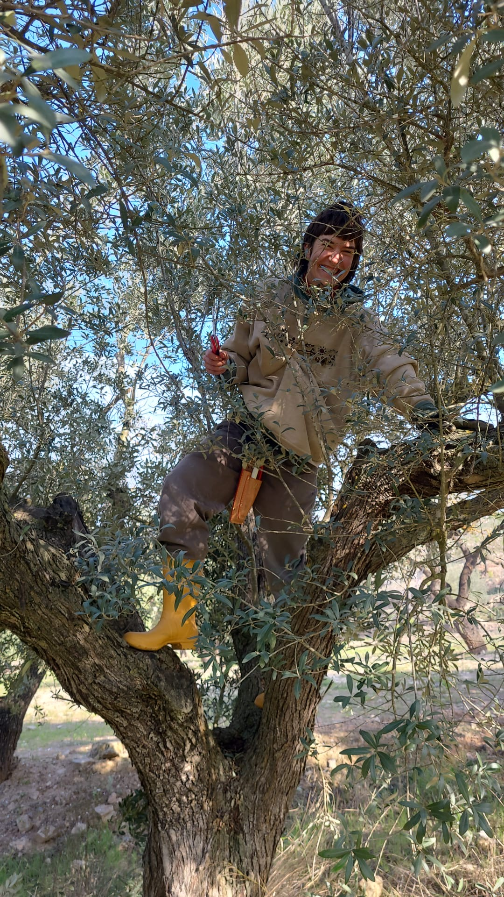

Cuerpo Tierra
The CUERPO.TIERRA project emerges from the need to explore and implement forward-oriented strategies that rethink and, above all, reimagine how to live the relationships we have (learned) with our bodies and with ourselves, with each other and with the Earth.

